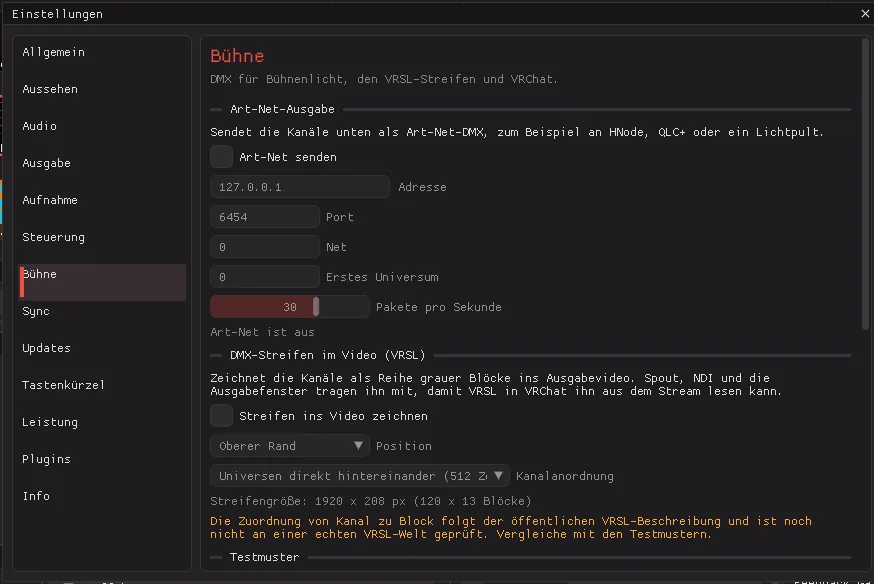

Inhalt
Erste Schritte
- Willkommen bei NyrexVJ
- Installation und erster Start
- Das Fenster im Überblick
- Deine erste Show in fünf Minuten
Visuals spielen
- Das Clip-Raster
- Decks und Übergänge
- Layer und Mischmodi
- Das Clip-Fenster
- Effekte
- Die Bibliothek
- Presets und Sitzungen
- Das Master-Fenster
Musik und Bewegung
Eigene Inhalte
- Video- und Bild-Clips
- Deine eigenen Shader
- 3D-Modelle
- Der Clip Creator
- Text, Partikel und Effektketten
- Der Node-Effekt-Editor
- Live-Quellen: Spout, NDI und Kameras
Ausgabe und Aufnahme
Live-Steuerung und Shows
- Steuerung: MIDI, OSC und die Webseite
- Show-Sync und Timecode
- Die Show-Zeitleiste
- Bühne: DMX, VRSL und VRChat
- Plugins
Nachschlagen und Hilfe
Handbuch / Live-Steuerung und Shows
Bühne: DMX, VRSL und VRChat
#Was sie macht
Einstellungen, Bühne macht aus jedem Regler Licht-Daten. Drei Teile arbeiten unabhängig voneinander. Art-Net sendet DMX-Kanäle über das Netzwerk, zum Beispiel an HNode, QLC+ oder ein Lichtpult. Der DMX-Streifen zeichnet dieselben Kanäle als Reihe grauer Blöcke ins Ausgabevideo, so wie VRSL DMX in einem Videostream liest. Die VRChat-Parameter senden Werte über OSC an deinen Avatar.


#Kanäle
Jede Kanal-Zeile hat einen Namen, ein Universum von 1 bis 4, einen Kanal von 1 bis 512 und eine Quelle. Die Quelle ist Fest, mit einem Wert, den du einstellst, oder eine Modulationsquelle: Bass, Mitten, Höhen, Pegel, Kick, ein LFO, ein Makro, Beat oder Bar. Zwei Zahlen legen den Wert bei Quelle 0 und bei Quelle 1 fest, und Invertieren kehrt ihn um. 16 Bit nutzt den gewählten Kanal und den nächsten. Du kannst bis zu 128 Kanäle anlegen. Ein Makro bewegt ein Licht genau wie einen Effekt.
#Art-Net
Art-Net senden schaltet den Ausgang ein. Stell die Adresse des Knotens, den Port, das Net und das Erste Universum ein. Universum 1 von NyrexVJ wird als erstes Art-Net-Universum gesendet, die nächsten folgen. Pakete pro Sekunde legt die Rate fest. NyrexVJ sendet nur und antwortet nicht auf Abfragen anderer Geräte.
#Der Streifen im Video
Streifen ins Video zeichnen legt einen Streifen aus 120 mal 13 Blöcken an den oberen oder unteren Rand des Ausgabebildes. Jeder Block zeigt einen Kanal als Grau, von Schwarz für 0 bis Weiß für 255. Mit Kanalanordnung wählst du, wie die Kanäle angeordnet werden. Bei 1920 x 1080 hat jeder Block genau 16 x 16 Pixel. Der Streifen überdeckt das Bild darunter, halte diesen Rand in deinen Visuals also frei.
#VRChat-Parameter
An VRChat senden schickt Werte über OSC an VRChat. Füge einen Parameter hinzu, tipp seinen Namen so ein, wie er im Avatar heißt, und wähl die Quelle. Updates pro Sekunde legt die Rate fest.
#Testbilder
Die Testmuster überschreiben die Kanäle mit einem Signal auf Art-Net und im Streifen, bis du Aus wählst. Nutze sie, um die Verkabelung und die Welt zu prüfen, bevor du eine Show baust.
Fehler gefunden oder etwas vergessen? Sag es uns auf GitHub. Dasselbe Handbuch steckt im Programm, du hast es also auch ohne Internet. Öffne es mit F1 oder über das Menü Hilfe, Handbuch.